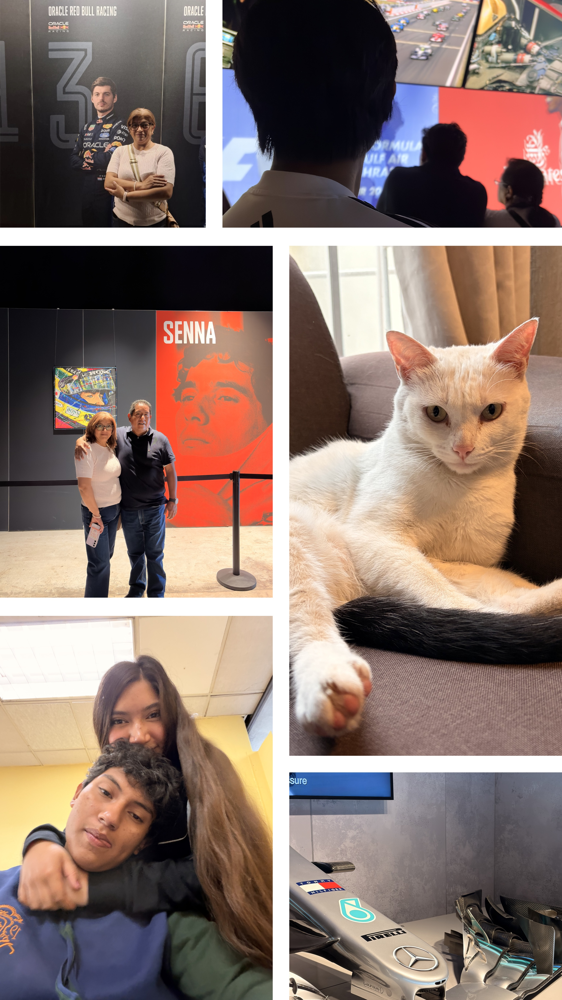

|
 |
Santiago Yahuaca López
Bueno, hola, me presento, soy Santiago Yahuaca Lopez (como supongo ya te habras dado cuenta jejeje), soy un chico bastante tranquilo, la verdad no me gusta meterme en problemas, siento que la honestidad, el respeto y la lealtad son algunos de los aspectos que tengo que me ayudan a evitar conflictos con las personas; si hablamos mas de mi familia, tampoco dire que somos una familia perfecta pero creo que siempre nos hemos apoyado y, sentir el apoyo de mis papas y en particular de mi hermano es algo que me motiva dia con dia a quererme comer el mundo, a no sentirme satisfecho con lo que tengo y siempre querer un poco mas porque se que lo puedo lograr; ademas de que me impulsa a demostrarle lo mismo a los demas, ese apoyo que veo reflejado en mi, trato de transmitirlo con los demas, ese optimiso que me ha caracterizado a lo largo de mi vida trato de demostrarlos con los demas para animarlos a superarse y a encontrar nuevas cosas que puedan hacer bien en sus vidas. Siento que me estoy intando como alguien perfecto pero,tambien se que tambien tengo muchos defectos como: pecar de confiado, a veces de egocentrico y sobre todo, que me cuesta mucho ver las cosas hechas de una manera diferente como yo las suelo hacer, esto lo descubri mas que nada, con mi novia, a traves de los meses que hemos compartido entendi que no todo debe estar hecho como yo lo hago y que, a pesar de que no sea como yo lo piense correcto va a estar mal, al contrario, muchas veces suele salir bien o mejor que como yo me lo habia imaginado. Tambien quiero aprovechar este espacio para hablar de mi ardua aficion hacia los gatos, desde abril del 2023, que llego a mi vida mi gata "SHIRA", descubri en mi un nuevo gusto, siento que otra de las cosas que me han ayudado a ser como soy es mi gata, se que suena un poco estupido si lo quieres ver asi, pero considero que esa compañia silenciosa que puede tener una mascota no tiene igual, hay momentos donde lo unico que queremos como personas es estar en silencio, relajarnos y contemplar nuetra existencia, ahi es donde entra mi gata, ese ronroneo que tiene me relaja mucho, el poder acariciarla y poder dejar de sentirme solo para poder relajarme es algo que me encanata. Y bueno, para terminar solo comento que la foto que puse, la puse despues de escribir esto, asi que no se que puse jejejeje, pero supongo que es algo de mi familia con mi gata y mi novia o algo por el estilo. Me despido, no sin antes decir, FORZA FERRARI |